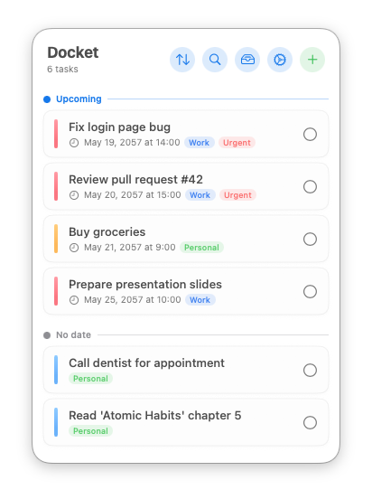
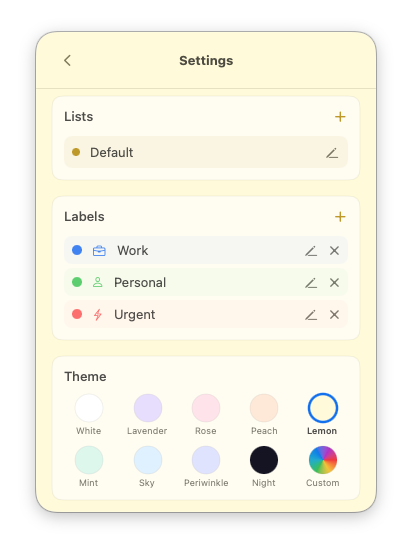

A beautiful, minimal task manager that lives in your macOS menu bar. Integrates with Apple Reminders — iCloud, Siri, and Apple Watch support out of the box.

Two-way sync with Apple Reminders. iCloud, Siri, Apple Watch — automatically.
Type "tomorrow 3pm" or "next friday" — natural language parsed instantly.
Open Docket from anywhere. Double-press to quick-add without leaving your flow.

9 pastel themes, custom colors, and native Liquid Glass on macOS 26.
Color-coded labels, multiple lists, and smart filtering. Organize your way.
Daily, weekly, or monthly — auto-recreates on completion. Never forget.
Questions, bug reports, or feature requests are welcome. I'm happy to help.